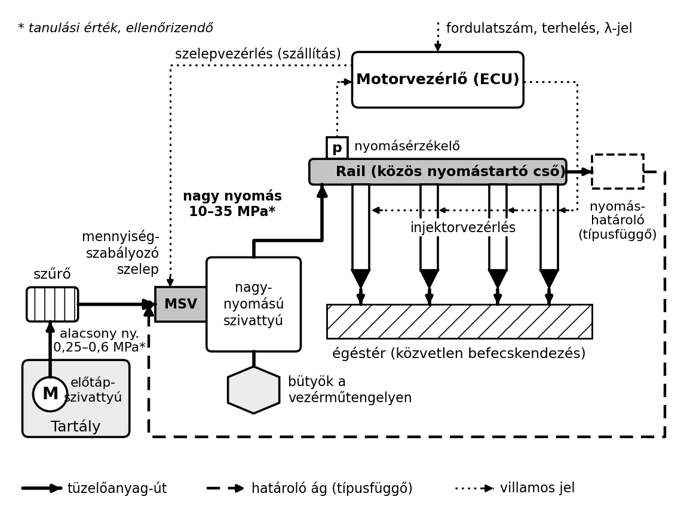

Egy korszerű turbós Otto-motorral szerelt autónál az ügyfél azt
mondja: „sokkal jobban megy, mint a régi, mégis kevesebbet fogyaszt”. A
műhelyben a szervizadatok azt mutatják, hogy a motor
szívócső-befecskendezéses (MPi) vagy egyenesen közvetlen
befecskendezésű. A közvetlen befecskendezésű Otto-motorok (Gasoline
Direct Injection, GDi; régebbi elnevezéssel FSI, TSI, EcoBoost stb. – a
márkanevek csak rendszerjelölésként) ma már a személyautók meghatározó
motorjai közé tartoznak. Ha a tanuló ilyen motornál injektort cserél,
fogyasztási panaszt diagnosztizál vagy kopogásos égést vizsgál, pontosan
tudnia kell, mi történik a hengerben, hogyan épül fel a nagynyomású
oldal, és miért van szükség rendkívül nagy nyomásra. A fejezet ezt a
rendszert mutatja be a szívócső-befecskendezéshez képest, és felkészít a
jellemző hibákra, a részecskekibocsátásra és a biztonságos
javításra.
19.3.2 Szemléletes kép
Képzeljünk el egy hengert, amelyben a dugattyú a szívóütem alatt
lefelé halad, és csak tiszta levegőt szív be a nyitott
szívószelepen át. A tüzelőanyagot nem a szívócsőbe, hanem közvetlenül az
égéstérbe fecskendezi egy nagynyomású injektor, amely a hengerfejben, a
gyújtógyertya közelében helyezkedik el. A befecskendezés időzítése lehet
a szívóütem alatt (ekkor a levegő és a tüzelőanyag viszonylag
egyenletesen keveredik – homogén keverékképzés), vagy a kompresszióütem
végén, röviddel a gyújtás előtt (ekkor a gyújtógyertya környékén dús,
gyúlékony felhő képződik, a henger többi részében pedig szegény keverék
van – rétegzett keverékképzés). A rendszer felépítését az alábbi vázlat
szemlélteti; a tüzelőanyag útja és a vezérlés jelútja külön
vonaltípussal szerepel:

A közvetlen befecskendezésű Otto-motor
tüzelőanyag-rendszere: folytonos vonal a tüzelőanyag útja, pontozott a
villamos jelút (szemléltető vázlat; a nyomásértékek tanulási példák,
ellenőrizendő)
Az ábrán az alacsony nyomású oldal a tartályból a szűrőn át juttatja
el a tüzelőanyagot a nagynyomású szivattyúhoz. A nagynyomású szivattyú a
motortól kapott mechanikus hajtással (jellemzően a vezérműtengely bütyke
működteti) felnyomja a tüzelőanyagot a közös nyomástartó csőbe, a
railbe. A railben a nyomást a vezérlőegység a nyomásérzékelő jele
alapján szabályozza, a beavatkozó a szivattyún lévő mennyiségszabályozó
szelep. A railből a nagynyomású injektorok kapják a tüzelőanyagot, és a
vezérlőegység által meghatározott időpontban és időtartamig
befecskendezik az égéstérbe.
19.3.3 Definíciók és
összefüggések
Definíció.Közvetlen befecskendezésű
Otto-motor (Gasoline Direct Injection, GDi): olyan Otto-motor,
amelynél a tüzelőanyagot nem a szívócsőbe, hanem közvetlenül az
égéstérbe, a henger belsejébe fecskendezik be, jellemzően 10–35 MPa
nagyságrendű nyomáson (ellenőrizendő: típustól függően). A
befecskendezés történhet a szívóütem alatt (homogén keverékképzés) vagy
a kompresszióütem végén (rétegzett keverékképzés).
Definíció.Rail (közös nyomástartó
cső): a nagynyomású tüzelőanyagot tároló és egyenletesen elosztó cső,
amelyhez a nagynyomású injektorok csatlakoznak. A benne lévő nyomást a
vezérlőegység szabályozza, a nyomásérzékelő jele alapján.
Összefüggés. A befecskendezett tüzelőanyag-tömeg
(mg) a légviszonyból
()
és a hengerbe szívott levegő tömegéből
()
számítható a sztöchiometrikus levegő/tüzelőanyag-arány
(
kg levegő / kg benzin) segítségével:
Összefüggés. A befecskendezési idő
(ms) a szükséges tüzelőanyag-tömeg és az injektor statikus áramlási
sebessége
(g/min, adott nyomáson) alapján közelítőleg:
A valóságban az injektor nyitási és zárási késése miatt ezt a
vezérlőegység korrekciókkal módosítja; a képlet az arányérzéket mutatja
meg.
19.3.4 Felépítés és működés
19.3.4.1 A közvetlen befecskendezés
elve
A szívócső-befecskendezéshez képest a közvetlen befecskendezés
különbsége, hogy az injektor a beömlő csatorna helyett a hengertérbe
porlaszt. Ebből két alapvető működési mód következik.
Homogén keverékképzés (szívóütemi befecskendezés).
A tüzelőanyagot a szívóütem alatt fecskendezik be, amikor a dugattyú
lefelé halad. A hosszú idő alatt a keverék a hengerben közel
egyenletesen oszlik el, így a motor gyakorlatilag ugyanúgy működik, mint
a szívócső-befecskendezéses társa:
,
jó teljesítmény, stabil égés. Ilyenkor a fogyasztás és a
károsanyag-kibocsátás is hasonló, de a közvetlen befecskendezés lehetővé
teszi a magasabb sűrítési arányt, mert a tüzelőanyag párolgása hűti a
hengerben lévő levegőt, csökkentve a kopogás veszélyét.
Rétegzett keverékképzés (kompresszióütemi
befecskendezés). A tüzelőanyagot röviddel a gyújtás előtt, a
kompresszióütem végén fecskendezik be. A gyújtógyertya környékén
gyúlékony, közel sztöchiometrikus keverékfelhő keletkezik, míg a henger
többi részében nagyon szegény
(
akár 2–4) keverék vagy tiszta levegő van. A motor így részteljesítményen
nagyon szegény globális keverékkel is megbízhatóan jár, ami jelentős
fogyasztáscsökkenést ad. A rétegzett üzemmód feltétele a pontos
légmozgás (az égéstérben megfelelő örvénylés), a gyors porlasztás és a
nagynyomású injektor, valamint a kipufogógáz-utókezelés (a szegény
keverék miatt a háromutas katalizátor nem tudja a NOx-ot redukálni,
ezért rétegzett üzemmódban NOx-tároló katalizátort vagy más megoldást
használnak – ezt a későbbi fejezetek tárgyalják). A modern motorok
gyakran csak kis részterhelésen használják, és a legtöbb üzemállapotban
homogén üzemmódba kapcsolnak vissza.
Statikus változat (mint a PDF-ben)
Homogén és rétegzett keverékképzés hengermetszeten; alul a
főtengelyszög-skála a befecskendezési ablakokkal (a szögek példaértékek,
ellenőrizendő)
Az ábra bal oldalán a szívóütemben (példánkban 60–120°
főtengelyszögnél) befecskendezett tüzelőanyag a hengert egyenletesen
tölti ki
();
a jobb oldalon a sűrítési ütem végén (példánkban 300–320°, azaz
40–60°-kal a felső holtpont előtt) befecskendezett adag a gyertya körül
dús felhőt alkot, a globális
1,5–4. A HTML-változatban a főtengelyszög csúszkával léptethető, és az
üzemmód átkapcsolható.
Megjegyzés. A gyakorlatban a legtöbb mai közvetlen
befecskendezésű motor túlnyomórészt homogén üzemmódban fut, mert a
rétegzett üzemmód bonyolultabb emissziós szabályozást igényel. A
rétegzett keverékképzés azonban fontos elvi lehetőség, és a
vizsgakérdésekben is előfordul.
19.3.4.2 A nagynyomású rendszer
felépítése
A rendszer két nyomásszintre oszlik:
Alacsony nyomású oldal: a tartályban lévő
elektromos előtápláló szivattyú 0,25–0,6 MPa nyomást állít elő
(ellenőrizendő: típusfüggő), a tüzelőanyag egy finomszűrőn át a
nagynyomású szivattyúhoz jut.
Nagynyomású oldal: a mechanikusan hajtott
nagynyomású szivattyú a motortól kapott mozgással a tüzelőanyagot 10–35
MPa nyomásra sűríti (ellenőrizendő). A szivattyú leggyakrabban egy
dugattyús szivattyú, amelyet a vezérműtengelyen lévő bütyök mozgat; a
szivattyú bemenetén lévő mennyiségszabályozó szeleppel és/vagy a railben
lévő nyomásszabályozó szeleppel a vezérlőegység beállítja a kívánt
railnyomást.
A railben a nyomást nyomásérzékelő figyeli. A jel
alapján az ECU szabályozza a nagynyomású szivattyú szállítását. A
railhez csatlakoznak a nagynyomású injektorok. Ezek
piezoelektromos vagy mágnesszelepes működtetésűek; a nyitás és a zárás
igen gyors (tized–ezred másodperc nagyságrendű), mert a befecskendezési
idő a motorfordulattól és a terheléstől függően néhány ezredmásodperc. A
vezérlőegység a befecskendezési időt és a befecskendezés kezdetét (a
főtengely szöghelyzetéhez képest) szabályozza.
Statikus változat (mint a PDF-ben)
A bütyökhajtású egydugattyús nagynyomású szivattyú és a rail
metszete; alul a mennyiségszabályozó szelep zárási pillanata és a
szállított rész (sematikus; a nyomásértékek ellenőrizendők)
Az ábrán a vezérműtengely bütyke (1) a görgős emelőn (2) át mozgatja
a dugattyút (3). A mennyiségszabályozó szelep (4) a felfelé löket alatt
zár: ettől kezdve a munkatérben nyomás épül, és a nyomószelepen (5) át a
railbe jut a tüzelőanyag; minél később zár, annál kevesebb. A
nyomáshatároló szelep (6) a túl nagy railnyomást vezeti le, a kisnyomású
csillapító (7) a bemeneti nyomáslengéseket simítja.
Gyártói adat. A railnyomás, a befecskendezési idő, a
szivattyú típusa, a mennyiségszabályozó szelep vezérlése és a
nyomásmentesítési eljárás minden esetben a gyártó javítási
utasítása szerint kezelendő; az itt megadott értékek tanulási
példák (ellenőrizendő: konkrét típusra).
19.3.4.3 Kettős befecskendezés (MPi
+ GDi)
Egyes gyártók a szívócső-befecskendezést és a közvetlen
befecskendezést kombinálják: a motor mindkét befecskendező rendszerrel
rendelkezik. Ez a kettős befecskendezés. Célja, hogy
egyesítsék a két rendszer előnyeit:
A közvetlen befecskendezés jó teljesítményt és alacsony fogyasztást
ad, a töltethűtés miatt magasabb sűrítési arányt tesz lehetővé.
A szívócső-befecskendezés a szívószelepek mögé fecskendezett
tüzelőanyaggal mossa a szívószelepeket, csökkentve a kokszlerakódást
(lásd a hibáknál).
Kis terhelésen a szívócső-befecskendezés használatával jobb
keverékképzés érhető el, és csökkenthető a részecskeképződés.
A vezérlőegység az üzemállapottól függően dönti el, hogy melyik
injektort, milyen arányban működteti. A kettős befecskendezés
bonyolultabb rendszer, de a kibocsátási előírások szigorodásával egyre
gyakoribb.
19.3.5 Előnyök és hátrányok
Előnyök:
Fogyasztáscsökkenés: a rétegzett üzemmód kis
terhelésen szegény keverékkel dolgozik; a homogén üzemmódban a magasabb
sűrítési arány és a töltethűtés javítja a hatásfokot.
Teljesítménynövekedés: a tüzelőanyag párolgása a
hengerben hűti a beszívott levegőt, növeli a sűrűségét, így nagyobb
töltet és nagyobb teljesítmény érhető el.
Jobb kopogástűrés: a közvetlen befecskendezés a
kompresszióütemben porlasztott tüzelőanyaggal elvonja a hőt a
keverékből, ami lehetővé teszi magasabb sűrítési arányt (pl.
turbófeltöltésnél) anélkül, hogy kopogás lépne fel.
Hátrányok:
Részecskekibocsátás: a közvetlen befecskendezésnél
a tüzelőanyag rövid ideje alatt nem mindig párolog el teljesen,
különösen hideg motornál, magas terhelésnél. A folyadékfilmek elégése
koromrészecskéket képez. Ezért a korszerű közvetlen befecskendezésű
motorokhoz benzin-részecskeszűrőt (Gasoline Particulate Filter,
GPF) szerelnek, hasonlóan a dízelmotorok
részecskeszűrőjéhez.
Szívószelep-kokszosodás: mivel a tüzelőanyag nem
folyik át a szívószelepeken, a forgattyúház-szellőztetésből származó
olajgőz lerakódik a szívószelep tányérján és a szívócsatornában. Ez
idővel kokszréteget képez, amely rontja a légáramlást, a keverékképzést,
és teljesítménycsökkenést, egyenetlen alapjáratot okozhat. A kettős
befecskendezés ezt részben ellensúlyozza.
Bonyolultabb, drágább rendszer: a nagynyomású
szivattyú, a rail, a nagynyomású injektorok és a vezérlés nagyobb
költséget és javítási szakértelmet igényel.
Nagynyomású biztonsági kockázat: a rendszerben lévő
10–35 MPa nyomás alatti tüzelőanyag bőrbe hatoló sugárral súlyos
sérülést okozhat; a szerelés előtt gyártói nyomásmentesítés
kötelező.
Táblázat: Homogén és rétegzett keverékképzés
összehasonlítása
Jellemző
Homogén üzemmód
Rétegzett üzemmód
Befecskendezés időpontja
Szívóütem alatt
Kompresszióütem végén
Keverékeloszlás a hengerben
Közel egyenletes
Gyújtógyertya környékén dús, máshol szegény
Légviszony
≈ 1 (vagy kissé dús/szegény)
Globálisan 1,5–4, lokálisan ≈ 1
Fogyasztás kis terhelésen
Magasabb
Alacsonyabb
NOx-utókezelés
Háromutas katalizátor elég
NOx-tároló vagy egyéb megoldás szükséges
Üzemállapot
Nagyobb terhelés, hideg motor
Kis-közepes terhelés, meleg motor (ha a rendszer támogatja)
Az értékek tanulási példák (ellenőrizendő: gyártói adat / hatályos
előírás).
Adott: Egy négyhengeres Otto-motor szívóütemén
hengerenként
levegőt szív be. A vezérlőegység homogén üzemmódban
légviszonyt állít be. A sztöchiometrikus levegő/tüzelőanyag-arány
.
Keresett: a hengerenként befecskendezett
tüzelőanyag-tömeg
.
Képlet:
Behelyettesítés:
Ellenőrzés: A kapott érték reális: egy 0,5 literes
hengerbe 480 mg levegő fér kb. 1 bar nyomáson, és a szükséges benzin
tömege ennek körülbelül a 1/14,7-ed része. ∎
19.3.6.2 2. példa: Befecskendezési
idő becslése
Adott: Ugyanannál a motornál az injektor statikus
áramlási sebessége
railnyomásnál
(példa, típusfüggő, ellenőrizendő). A szükséges befecskendezett tömeg
.
Keresett: a szükséges befecskendezési idő
(ms), ha figyelmen kívül hagyjuk a nyitási-zárási késést.
Képlet:
Behelyettesítés:
Ellenőrzés: 3000 1/min-nél egy szívóütem kb. 10 ms,
a 3,3 ms belefér. A valóságban az injektor dinamikája és a vezérlési
korrekciók miatt az idő kissé eltér. ∎
19.3.7 Minőségellenőrzés
A közvetlen befecskendezésű rendszer ellenőrzése során mindig a
gyártói javítási utasítás és a diagnosztikai adatok az irányadók. A
jellemző ellenőrzési pontok:
Railnyomás mérése: diagnosztikai műszerrel vagy
nyomásérzékelő jelével ellenőrizzük, hogy a beállított és a tényleges
nyomás megegyezik-e. Eltérés utalhat szivárgó injektorra, hibás
szivattyúra, eltömődött szűrőre vagy hibás nyomásszabályozóra.
Injektor elektromos ellenőrzése: multiméterrel vagy
oszcilloszkóppal a vezérlőjel és a tekercs ellenállás (ha
mágnesszelepes) ellenőrzése. Figyelem.
Piezoinjektorokat ellenállásmérővel vizsgálni tilos lehet a gyártói
előírás szerint – csak a gyártó által engedélyezett mérést
végezzük.
Szivárgás ellenőrzése: a nagynyomású rendszer
nyomásesésének mérése a motor leállítása után; a rail nyomásának nem
szabad gyorsan csökkennie. Ha igen, injektor vagy nyomásszabályozó
szivárog.
Szívószelep-kokszosodás vizsgálata: endoszkóppal a
szívócsatornán át vagy leszerelés után a szeleptányérok lerakódásának
mértéke. A koksz vastagsága rontja a töltetminőséget; a tisztítás módja
gyártófüggő (vegyszeres, mechanikus, dióhéj-szemcseszórás –
ellenőrizendő).
19.3.8 Valós életbeli
alkalmazás
Eset: Egy turbófeltöltős, közvetlen befecskendezésű
autó tulajdonosa arra panaszkodik, hogy a motor hidegen egyenetlenül
jár, melegen kissé lomha, és a fogyasztás megnőtt. A diagnosztikai
műszer nem jelez hibakódot, de az élő adatokban hidegen a 2. és 3.
henger gyújtáskimaradás-számlálója nő, a hengerenkénti lambda-korrekció
pedig eltér a többitől.
Vizsgálat: A szerelő először a mérés nélküli levegőt
(szívócső-tömítés, forgattyúház-szellőztetés szelepe, vákuumtömlők) és a
tüzelőanyag-nyomást (előtápláló és rail) ellenőrzi, majd
hengerspecifikus kimaradás mellett endoszkóppal megtekinti a
szívószelepeket. Jelentős kokszlerakódást talál a szívószelep tányérján
és a szívócsatornában; ez a lerakódás (mivel a benzin nem mossa a
szelepet) hidegindításkor gyújtáskimaradást és egyenetlen járást
okoz.
Javítás: A gyártói eljárás szerint a szívócsatornát
és a szelepeket megtisztítják (pl. dióhéj-szemcseszórással vagy
engedélyezett vegyszeres eljárással, a gyártó utasítása szerint). A
tisztítás után a kimaradások megszűnnek, a motor járása egyenletes lesz,
a fogyasztás visszaáll a gyártói érték közelébe.
Tanulság: A közvetlen befecskendezésű motoroknál a
szívószelep-kokszosodás tipikus, hibakód nélküli probléma. A
diagnosztikában az élő adatok (kimaradásszámlálók, lambda-korrekció,
levegőtömeg-jel) és a vizuális ellenőrzés együttesen vezet az okhoz; a
pozitív (szegény) lambda-korrekció tipikusabb oka a mérés nélküli levegő
vagy az alacsony tüzelőanyag-nyomás.
19.3.9 Gyakorlati útmutató
A nagynyomású rendszer bontása előtt a nyomásmentesítés kötelező. Az
alábbi eljárás tanulási példa, minden konkrét típusnál
a gyártó utasítása a mérvadó.
Cél: A nagynyomású tüzelőanyag-rendszer
nyomásmentesítése az injektor vagy a rail szerelése előtt.
Szerszámok és anyagok: diagnosztikai műszer (a
nyomáscsökkentéshez, ha a gyártó így írja elő), védőszemüveg,
védőkesztyű, tiszta rongy, gyűjtőedény, a gyártói javítási utasítás.
Biztonsági korlát. A feladat tanműhelyi környezetre,
oktató felügyeletére és a gyártói javítási utasítás betartására
vonatkozik; a megadott értékek tanulási példák.
Adatazonosítás: keressük ki a gyártói
nyomásmentesítési eljárást és a várakozási időt.
Nyomásmentesítő funkció: ha a gyártó előírja,
diagnosztikai műszerrel zárjuk le a mennyiségszabályozó szelepet, vagy
futtassuk a nyomásmentesítő funkciót. Ha ehhez motort kell járatni,
kizárólag kipufogógáz-elszívással tegyük (a CO
színtelen, szagtalan, halálos gáz).
A railnyomás ellenőrzése: élő adatban
(nyomásérzékelő) figyeljük a railnyomást; bontani csak akkor szabad, ha
a nyomás a gyártói határérték alá esett (példa: 0,5 MPa alatt,
ellenőrizendő: gyártói adat). A railnyomás leállítás után is
percekig–órákig több MPa lehet.
Áramtalanítás: ezután gyújtás ki, kulcs távol, a
gyártó előírása szerint a 12 V-os akkumulátor negatív pólusának lekötése
(az adatok megőrzése után, ha szükséges).
Várakozási idő: tartsuk be a gyártói várakozási
időt, majd a csatlakozást hideg motornál, gyűjtőedény fölött bontsuk; a
rongy csak a maradék benzin felfogására való, nem véd a
nagynyomású sugár ellen.
Szerelés és visszaszerelés után: a tervezett munkát
(injektorcsere, railcsere stb.) a gyártói meghúzási nyomatékok és
tömítések betartásával végezzük; a nagynyomású csatlakozások tömítéseit
cseréljük, ha a gyártó előírja. Ezután ellenőrizzük a tömítettséget, a
railnyomás felépülését diagnosztikai műszerrel, és töröljük az esetleges
hibakódokat, majd végezzünk próbautat.
Figyelem. A nagynyomású tüzelőanyag-sugár bőrbe
hatolva súlyos, akár amputációt igénylő sérülést okozhat. A
befecskendezési rendszeren csak a gyártói utasítás szerint, megfelelő
védőfelszerelésben szabad dolgozni. A rendszer nyomás alatt nem
bontható: a nagynyomású vezetéket vagy csatlakozót
tilos nyomásmentesítés helyett oldani.
19.3.10 Tipikus hibák
Nyomás alatt oldja a nagynyomású csatlakozást. A
szerelő siet, és nem mentesíti a rendszert. A tüzelőanyag-sugár bőrbe
hatolhat, ami súlyos sérülés. Helyes gyakorlat: mindig
a gyártói nyomásmentesítési eljárást követni, védőkesztyűben és
védőszemüvegben.
A railnyomás hibáját injektornak tulajdonítja. Ha a
nyomás nem éri el a kívánt értéket, az ok lehet szivárgó nagynyomású
szivattyú, hibás mennyiségszabályozó szelep, eltömődött szűrő vagy hibás
nyomásérzékelő is, nem csak az injektor. Helyes
gyakorlat: a diagnosztikai műszerrel ellenőrizzük a
nyomásszabályozó jeleit, a szivattyú szállítását és a leállás utáni
nyomásesést, mielőtt injektort cserélnénk.
A szívószelep-kokszosodást a szelephézag rossz beállításának
gondolja. A közvetlen befecskendezésű motornál a lerakódás
okozta tünetek hasonlóak lehetnek a szelephézag hibájához (egyenetlen
járás, teljesítménycsökkenés). Helyes gyakorlat:
először a szívócsatornát endoszkóppal ellenőrizni; a koksz tisztítása
előtt ne nyúljunk a szelepvezérléshez.
Figyelmen kívül hagyja a GPF állapotát. A
részecskeszűrő eltömődése növeli a kipufogó ellennyomást, ami
fogyasztásnövekedéshez és teljesítménycsökkenéshez vezet. Helyes
gyakorlat: a diagnosztikai adatokban a kipufogónyomás vagy a
GPF töltöttségi állapot ellenőrzése, és a regenerálás vagy tisztítás a
gyártói eljárás szerint.
19.3.11 Önellenőrzés
Igaz vagy hamis? A közvetlen befecskendezésű
motornál a tüzelőanyagot a szívócsőbe fecskendezik be.
Mi a jellemző railnyomás-tartomány a közvetlen
befecskendezésű Otto-motoroknál? (a) 0,3–0,6 MPa, (b) 10–35 MPa, (c)
50–100 MPa.
Egy motor homogén üzemmódban
mellett hengerenként 500 mg levegőt szív be. Mennyi tüzelőanyagot
fecskendez be? (L_st = 14,7)
Miért van szükség GPF-re a közvetlen
befecskendezésű motoroknál?
Mi a teendő a nagynyomású rendszer megbontása
előtt? (röviden)
Milyen tipikus hiba okoz szívószelep-kokszosodást a
közvetlen befecskendezésű motoroknál?
19.3.12 Az önellenőrzés
megoldásai
Önellenőrzés – válaszok:
Hamis. A közvetlen befecskendezésnél a
tüzelőanyagot közvetlenül az égéstérbe, a hengerbe fecskendezik be.
(b) 10–35 MPa (ellenőrizendő: típustól
függően).
Mert a közvetlen befecskendezés során tökéletlen párolgás és
folyadékfilm égése miatt koromrészecskék keletkeznek, amelyeket a GPF
fog meg.
A rendszert a gyártói utasítás szerint nyomásmentesíteni kell,
védőfelszerelésben, soha nem nyomás alatt megbontani.
A tüzelőanyag nem mossa a szívószelepeket, így a
forgattyúház-szellőztetésből származó olajgőz lerakódik és
kokszosodik.
19.3.13 Feladatok
1. feladat (A) Definiálja röviden a „rail”
fogalmát!
2. feladat (A) Számítsa ki a befecskendezett
tüzelőanyag-tömeget, ha a hengerbe szívott levegő tömeg 600 mg, a
légviszony
és
!
3. feladat (B) Egy közvetlen befecskendezésű motor
injektorának statikus áramlási sebessége 400 g/min 15 MPa nyomáson. A
vezérlőegység 12 mg tüzelőanyagot akar befecskendezni. Becsülje meg a
befecskendezési időt (ms) a nyitási-zárási késés elhanyagolásával!
4. feladat (B) Magyarázza el, mi a különbség a
homogén és a rétegzett keverékképzés között! Melyik üzemmód milyen
terhelésnél jellemző?
5. feladat (C) Egy közvetlen befecskendezésű
motornál a diagnosztikai műszer azt mutatja, hogy a railnyomás
alapjáraton 4 MPa a kívánt 12 MPa helyett. A szivattyú vezérlőjele
maximális. Soroljon fel legalább három lehetséges okot, és ismertesse,
milyen méréssel dönthető el, melyik áll fenn!
6. feladat (D) Egy ügyfél autójánál a motor
hidegindítás után erősen rángat, és a műszerfal nem jelzi a hibát. A
lambda-korrekció rövid távú értéke +20% körül mozog. A
kipufogógáz-elemzés enyhén szegény keveréket mutat. Milyen alkatrészt
gyanúsít elsőként? Ismertesse a vizsgálat lépéseit!
19.3.14 A feladatok megoldásai
1. feladat (A) A rail a közös nyomástartó cső a
nagynyomású tüzelőanyag-rendszerben, amely a nagynyomású szivattyúból
kapott tüzelőanyagot tárolja és egyenletesen elosztja az injektorok
felé, nyomásérzékelővel figyelt nyomáson.
2. feladat (A)
Ellenőrzés: reális érték, mert
enyhén szegény, tehát kevesebb tüzelőanyag kell, mint
-nál.
∎
3. feladat (B)
Ellenőrzés: a kapott idő a tipikus befecskendezési tartományba esik.
∎
4. feladat (B) Homogén keverékképzésnél a
tüzelőanyagot a szívóütem alatt fecskendezik be, így a hengerben a
gyújtás előtt közel egyenletesen elkeveredik a levegővel,
mellett. Rétegzett keverékképzésnél a tüzelőanyagot a kompresszióütem
végén, közvetlenül a gyújtás előtt porlasztják, így a gyújtógyertya
környékén dús, gyúlékony felhő keletkezik, míg a henger többi része
szegény. A homogén üzemmód nagyobb terhelésnél, hideg motornál jellemző;
a rétegzett üzemmód kis-közepes terhelésnél, meleg motornál használható,
ha a motor rendelkezik a szükséges utókezeléssel.
5. feladat (C) Lehetséges okok:
Szivárgó injektor: tömítetlen tűszelep, a benzin az
égéstérbe szivárog (a benzines közvetlen befecskendezésű injektornak
nincs visszafolyó ága). Mérés: leállítás utáni railnyomás-esés (élő
adat), hengerenkénti gyújtáskimaradás-számláló vagy
lambda-hengerkorrekció, szükség esetén injektor-tesztpad.
Kopott nagynyomású szivattyú: a dugattyú vagy a
szelepek kopása miatt nem éri el a kívánt nyomást. Mérés: a szivattyú
nyomásoldali teljesítményének mérése, vagy a bemeneti és kimeneti nyomás
különbsége, esetleg a szivattyú mechanikus hajtásának ellenőrzése.
Hibás mennyiségszabályozó szelep: a szivattyú
bemenetén lévő szelep nem nyit/zár megfelelően, ezért nem szállít
elegendő tüzelőanyagot. Mérés: a szelep vezérlőjelének és a szivattyú
szállításának összehasonlítása; a szelep elektromos ellenállása, ha
mágnesszelepes.
Eltömődött tüzelőanyagszűrő vagy alacsony előtápláló
nyomás: a nagynyomású szivattyú nem kap elegendő tüzelőanyagot.
Mérés: az alacsony nyomású oldal nyomásának mérése a gyártó által
megadott értékhez képest.
Hibás nyomásérzékelő: a railben lévő érzékelő
tévesen alacsony nyomást jelez, ezért a vezérlőegység feleslegesen
növeli a szivattyú szállítását. Mérés: a tényleges nyomás
összehasonlítása mechanikus nyomásmérővel.
6. feladat (D) Elsőként a mérés nélküli levegőt
(szívócső-tömítés, forgattyúház-szellőztetés szelepe, vákuumtömlők) és a
tüzelőanyag-nyomást (előtápláló és rail) gyanúsítjuk, mert a pozitív
lambda-korrekció tipikus okai ezek; a szívószelep-kokszosodás jellemző
tünete inkább a hidegindítási gyújtáskimaradás és az egyenetlen
alapjárat. A vizsgálat lépései:
Diagnosztikai műszerrel élő adatok ellenőrzése: lambda-korrekció,
levegőtömeg, rail- és előtápláló nyomás, hengerenkénti
kimaradásszámláló.
Ha a falslevegő és a nyomások rendben vannak, és hengerspecifikus
kimaradás látszik: szívócsatorna és szívószelepek vizuális ellenőrzése
endoszkóppal.
Ha kokszlerakódás látható, akkor a gyártói tisztítási eljárás
elvégzése (pl. dióhéj-szemcseszórás, engedélyezett vegyszer).
Tisztítás után a lambda-korrekció és a járás ellenőrzése próbautas
teszttel.
Ha a koksz nem jelentős, más okok vizsgálata: szivárgó injektor,
hibás levegőtömeg-mérő, vákuumszivárgás stb.
19.3.15 Rövid összefoglaló
A közvetlen befecskendezésű Otto-motorok a tüzelőanyagot közvetlenül
az égéstérbe juttatják, jellemzően 10–35 MPa nyomáson. A rendszer
alacsony nyomású oldalból (tartály, előtápláló szivattyú, szűrő) és
nagynyomású oldalból (mechanikus nagynyomású szivattyú, rail,
nyomásérzékelő, nagynyomású injektorok) áll. Két keverékképzési mód van:
homogén (szívóütemben) és rétegzett (kompresszióütemben). A közvetlen
befecskendezés előnye a jobb hatásfok, a nagyobb teljesítmény és a
kopogástűrés; hátránya a részecskekibocsátás és a
szívószelep-kokszosodás, ezért GPF-re és tisztítási eljárásokra van
szükség. A nagynyomású rendszeren végzett bármilyen munka előtt a
gyártói nyomásmentesítés kötelező, mert a tüzelőanyag-sugár bőrbe
hatolva súlyos sérülést okoz. A diagnosztika során a railnyomás
(kívánt/tényleges), a leállás utáni nyomásesés és a lambda-korrekció
adja a leggyorsabb hibafelderítést.
19.3.16 Források és ellenőrzési
hiányok
Forrástípusok:
Gyártói javítási utasítások, szervizadatok, diagnosztikai adatok (a
konkrét típusra vonatkozóan).
ISO 15031 (az OBD-kommunikáció szabványcsaládja; ellenőrizendő: a
hivatkozott rész).
A járművek típusjóváhagyásáról szóló (EU) 2018/858 rendelet keretei
(ellenőrizendő: hivatkozás pontossága).
A kipufogógáz-kibocsátási előírások (Euro 6d stb.) (ellenőrizendő: a
hatályos normák és határértékek).
Ellenőrizendő állítások:
A railnyomás 10–35 MPa tartománya.
Az injektor statikus áramlási sebessége példaként megadott
értéke.
A rétegzett üzemmód légviszony-tartománya és NOx-utókezelési
igénye.
A GPF bevezetésének konkrét jogszabályi háttere.
A gyártói nyomásmentesítési eljárás lépései és várakozási idő.
Az adott típusra vonatkozó kettős befecskendezéses megoldások
részletei.